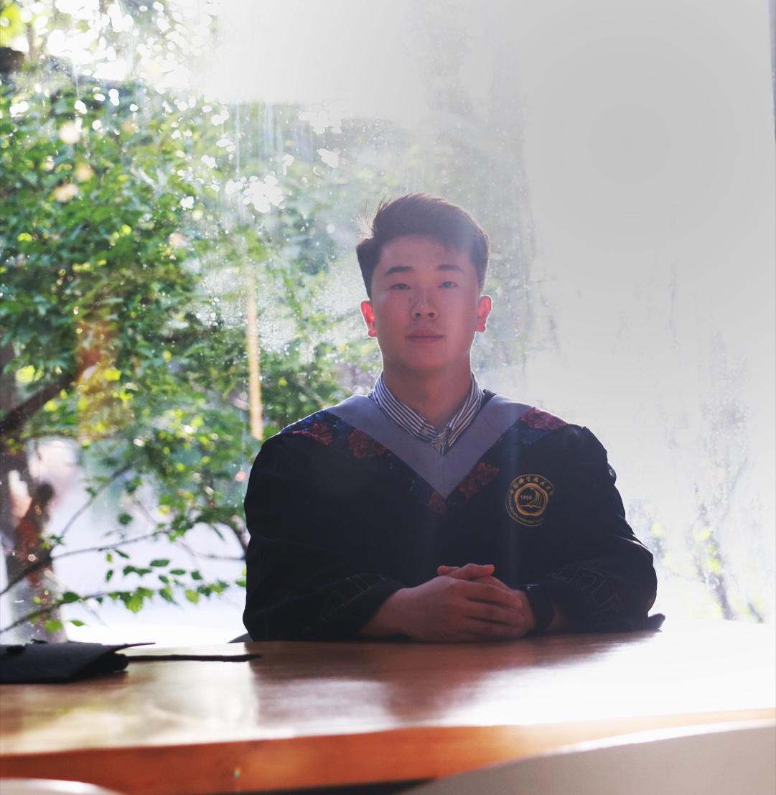

Zhenfang Zhu
Co-founder of Redding AI | AI Agent researcher
I’m Zhenfang Zhu, a co-founder of Redding AI. I received my undergraduate degree from the University of Science and Technology of China.
AI is the fastest technological revolution in human history, and it will become one of the most transformative technologies ever.
But if, ten years from now, it can do everything and all we can do is ask it questions, who has really progressed?
I have always believed that the purpose of AI should not be to make people unnecessary. That is why I created Anthesis. What I want to study is not how much AI can do for us, but who we will become after ten years of living and growing alongside it.